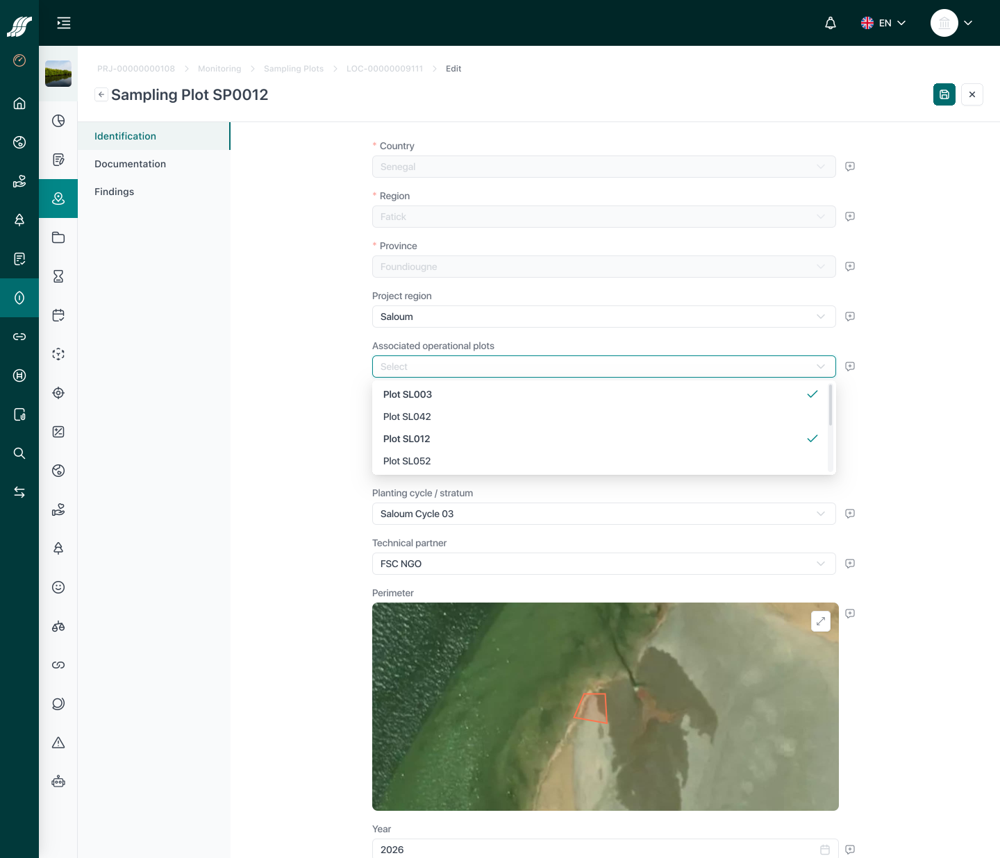

OWN
OWN
Own Data
Saved by you · Straatos
Coastal Roots Initiative
Implementing partner · Kobo
1
Coastal Roots Initiative
Implementing partner · Kobo
Fixed the spelling of our name. "Initative" was a typo.
Subject updated successfully
Click to fill the form